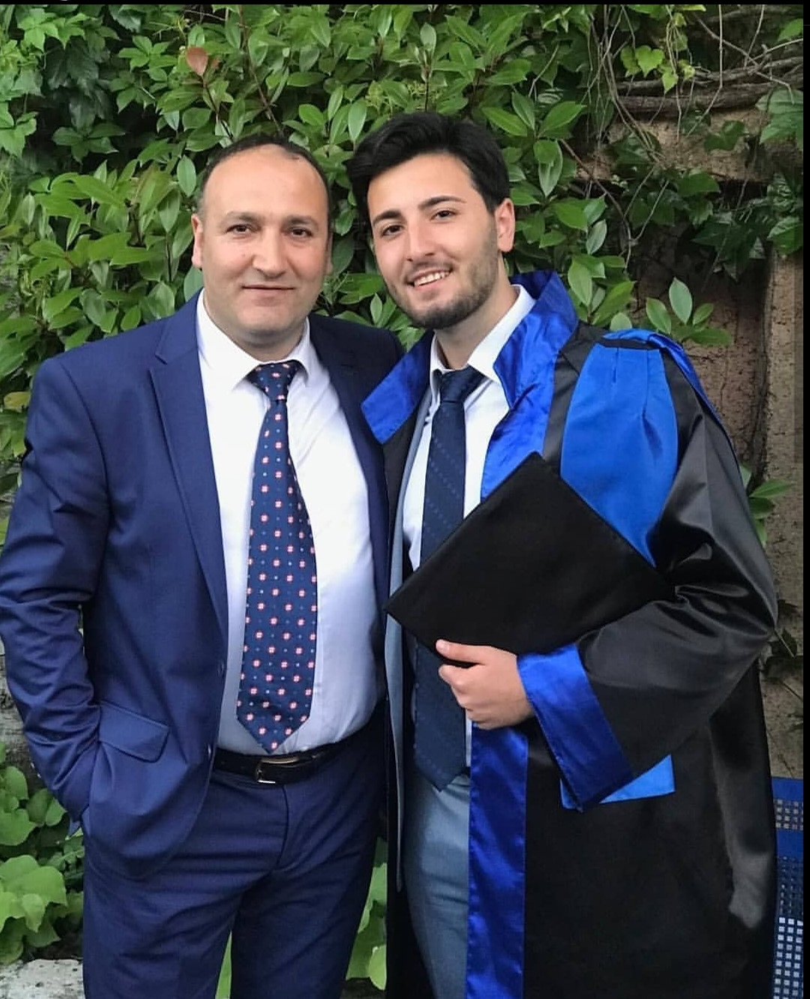

HAKKIMDA
Merhabalar Ben Furkan, 16 Mart 2000 Tarihinde İstanbul Bağcılar'da dünyaya geldim.Hayatımın üniveristeye kadar olan kısmında bu ilçede yaşadım. Özgeçmiş kısmında da görebileceğiniz gibi bir çok okulda eğitim aldım.Bu dönemde çok fazla insanla tanıştım.Lise yıllarımı Bahçelievler Anadolu Lisesinde geçirdim.Şu anda ise hayallerimin peşinde koştuğum bir bölümde okuyorum Sakarya Üniversitesi Bilgisayar Mühendisliği Bölümü ,bu bölümde elimden gelenin en iyisini yapmaya çalışıyorum.Şu anda 1.Sınıfta okuyorum ve kendimi sürekli geliştirmeye çalışıyorum. Benimle ilgili ayrıntılı bilgilere diğer sayfalardan ulaşabilirsiniz.
Merhabalar Ben Furkan, 16 Mart 2000 Tarihinde İstanbul Bağcılar'da dünyaya geldim.Hayatımın üniveristeye kadar olan kısmında bu ilçede yaşadım. Özgeçmiş kısmında da görebileceğiniz gibi bir çok okulda eğitim aldım.Bu dönemde çok fazla insanla tanıştım.Lise yıllarımı Bahçelievler Anadolu Lisesinde geçirdim.Şu anda ise hayallerimin peşinde koştuğum bir bölümde okuyorum Sakarya Üniversitesi Bilgisayar Mühendisliği Bölümü ,bu bölümde elimden gelenin en iyisini yapmaya çalışıyorum.Şu anda 1.Sınıfta okuyorum ve kendimi sürekli geliştirmeye çalışıyorum. Benimle ilgili ayrıntılı bilgilere diğer sayfalardan ulaşabilirsiniz.

HOBİLERİM VE KATILDIĞIM ETKİNLİKLER
Hobilerim arasında ilk sıraya kesinlikle yerleşmesi gereken şey futboldur.Geçirdiğim bazı sağlık sorunlarından önce her günüm futbol oynamakla geçerdi.İlkokuldan liseye en eğlendiğim hobimdi.Bir diğer hobim ise bilgisayar oyunları ama bilgisayar oyunlarından kesinlikle online olanları , arkadaşlarımla birlikte bir oyunda birlikte savaşmak çok hoşuma gidiyor.Çünkü insanlarla aynı anda aynı hisleri paylaşmayı seviyorum. Buradaki olay sadece oyun oynamak değil,oyun oynarken türlü türlü sohbetler ediliyor.Bunlar da insanı neşelendiriyor.
Hobilerim arasında ilk sıraya kesinlikle yerleşmesi gereken şey futboldur.Geçirdiğim bazı sağlık sorunlarından önce her günüm futbol oynamakla geçerdi.İlkokuldan liseye en eğlendiğim hobimdi.Bir diğer hobim ise bilgisayar oyunları ama bilgisayar oyunlarından kesinlikle online olanları , arkadaşlarımla birlikte bir oyunda birlikte savaşmak çok hoşuma gidiyor.Çünkü insanlarla aynı anda aynı hisleri paylaşmayı seviyorum. Buradaki olay sadece oyun oynamak değil,oyun oynarken türlü türlü sohbetler ediliyor.Bunlar da insanı neşelendiriyor.